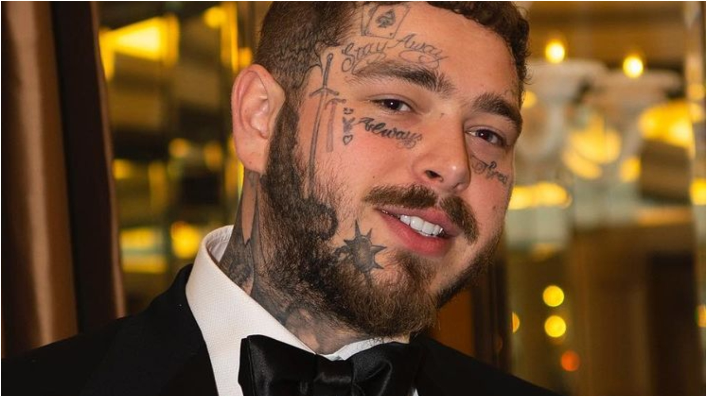
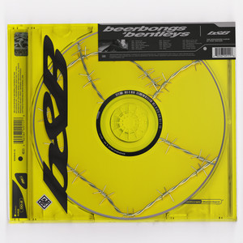

POP,
ROCK,
MUSIC
Trap
Sua origem
O trap surgiu no sul dos EUA, em especial em Atlanta, nos anos 1990. Era uma música do gueto: o termo se refere a locais onde se vendem drogas. O som reproduzia essa atmosfera sombria, com letras hedonistas, e começou a ficar popular em álbuns como Trap House, de 2005, do rapper Gucci Mane.
Os principais cantores
Matue
.jpg)
Matheus Brasileiro Aguiar, mais conhecido pelo nome artístico Matuê, é um rapper, cantor, compositor e guitarrista brasileiro. Ficou conhecido com o single "Anos Luz", lançado em 2017 e pelo álbum "Máquina do Tempo" lançado em 2020. É considerado um dos símbolos do trap brasileiro.
Travis Scott
Jacques Berman Webster II, mais conhecido por seu nome artístico Travis Scott, é um rapper, cantor, compositor e produtor musical norte-americano. Em 2012, Scott assinou seu primeiro grande contrato com a gravadora Epic Records.
Lil Wayne
Dwayne Michael Carter, Jr., mais conhecido pelo seu nome artístico de Lil Wayne, é um rapper, cantor, compositor, produtor executivo e empreendedor americano, conhecido por ser um dos maiores influenciadores do rap/trap atual e dono da gravadora Young Money Entertainment. Tambem conhecido como primeiro cantor do genero
Veigh
Com mais de 9 milhões de ouvintes mensais no Spotify, Veigh é um jovem de 23 anos que cresceu na comunidade de Itapevi, São Paulo. Sua jornada musical começou nas rodas de rima da Cohab 1, onde Thiago improvisava rimas de funk na palma da mão, moldando seu talento desde cedo nas ruas da periferia. A musica mais estorada/ouvida dele é o novo balaço que no caso é a mais ouvida do spotyfi
Post Malone

Musicas mais ouvidas do Trap
Tenho Que Me Decidir
SICKO MODE

Rockstar
